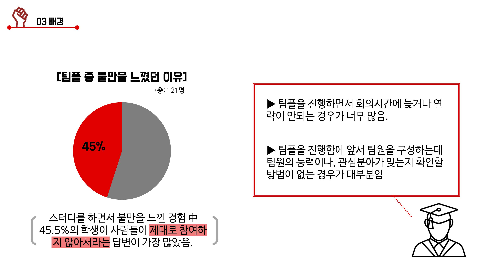
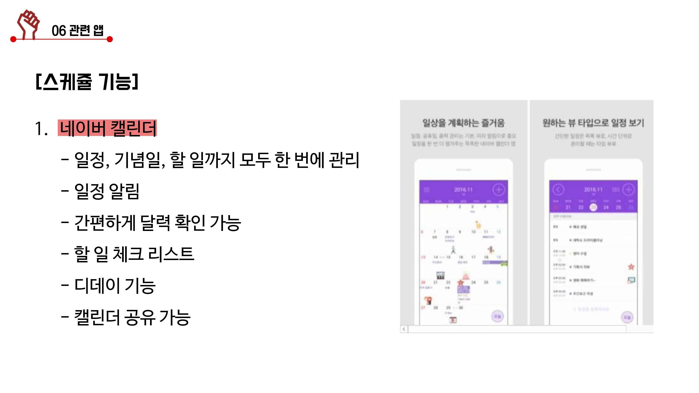
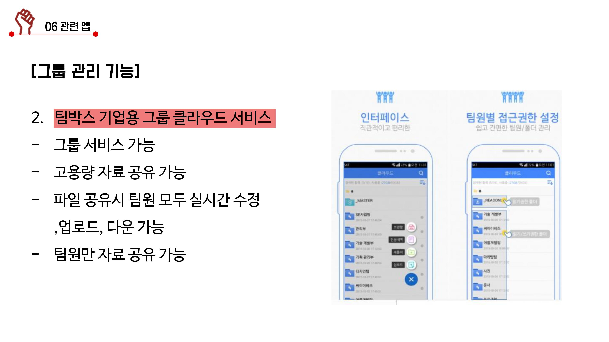

배경
대학생들을 상대로 설문을 진행한 결과,팀풀 중 불만을 느꼈던 45%학생들이
그 이유를 조원들이 제대로 참여하지 않아서라는 답변이 가장 많았다.
주로 팀플을 진행하면서 조운들이회의시간에 늦거나 연락이 안되고
팀원을 구성하는데 팀원의 능력이나 관심분야가 맞는지 확인할 방법이 없는 등 문제가 다수 존재했다.

스케쥴 관리
설문지를 바탕으로 앱에 타임라인 및 스케쥴 관리 기능을 넣었다.
팀원이 할당된 과제를 올리거나 투표를 진행하면 타임라인에서 시간순으로 볼 수 있다.
또한 타임라인에 등록된 스케쥴은 달력에 자동 업데이트 되며 알람이 생성된다.

그룹 관리
학기당 팀플은 여러개 존재하기 때문에 그룹을 생성하여 이를 효과적으로 관리한다.
조원을 초대할 수 있으며 등록된 그룹 안에서는 타임라인 및 평가 기능을 이용할 수 있다.
